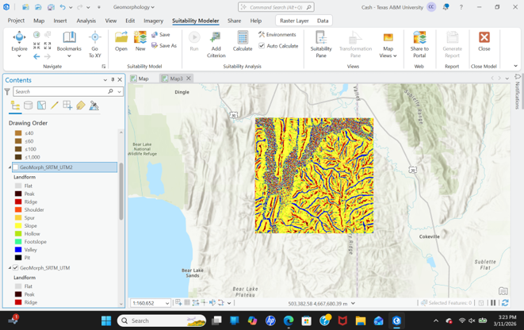
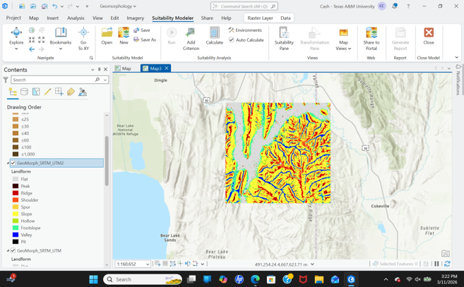
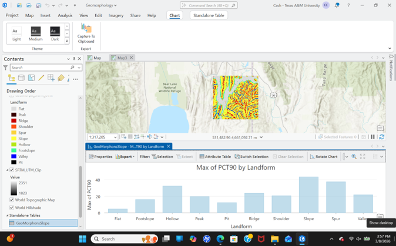

This project investigated automated terrain classification using Geomorphon analysis in ArcGIS Pro. A Digital Elevation Model (DEM) from eastern Idaho was processed to identify distinct landforms, evaluate classification parameters, and quantify terrain characteristics.
Terrain interpretation can be subjective and time-consuming. The objective of this project was to determine how Geomorphon classification parameters influence the identification of terrain features such as valleys, ridges, footslopes, peaks, and flats.
The analysis showed that larger search distances produced classifications that better reflected regional terrain patterns.
A flatness threshold of four degrees generated the most realistic representation of the study area.
Valleys, footslopes, and flat areas represented the most common landform classes, and slope statistics provided quantitative validation for the resulting classifications.
In future work, I would incorporate additional environmental variables such as land cover, curvature, vegetation indices, and hydrologic measurements to provide greater context for the classified terrain features.
I would also compare results with alternative landform classification techniques to evaluate relative performance and accuracy.
Maps, LiDAR visualizations, and analysis outputs from this project.


